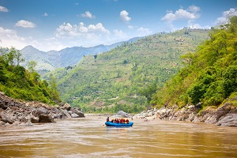

At Wild Water Rapids, we believe that everyone deserves to experience the thrill of whitewater rafting. Our mission is to provide safe, exciting, and memorable adventures for families, friends, and thrill-seekers of all skill levels.

Wild Water Rapids
History
Wild Water Rapids was founded in 2005 by a group of passionate river enthusiasts who wanted to share their love of whitewater adventures with the world. What started as a small operation with just two rafts has grown into a full-service rafting company.
Over the years, we have guided thousands of adventurers through some of the most exciting rapids in the region. Our experienced guides have a combined 100 years of river experience, and we pride ourselves on maintaining the highest safety standards while delivering unforgettable experiences.
Adventure Awaits You!